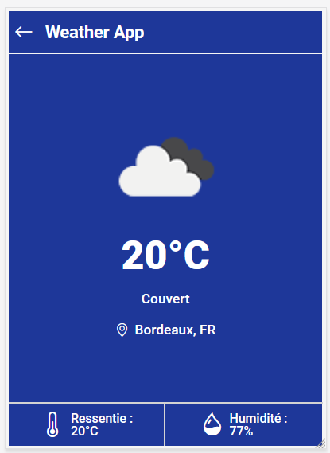

développeur web passionné
Développeur full-stack de formation, je suis passionné par la programmation de back-end de sites web où d'applications. La conception de BDD, de back-office ou d'API sont des tâches que j'affectionne particulierement. Cependant j'apprécie également travailler sur la partie front-end. Améliorer l'experience utilisateur tout en mettant en place des design jolis et créatifs sont des challenges que je trouve très motivant !
mon cv
compétences
hard skills
- Concevoir et déployer un site web responsive
- Concevoir et utiliser une API
- Programation Orientée Objet
- Architecture Model View Controller
- Création et gestion de BDD relationnelles
technologies maîtrisées
- Langages : HTML / CSS / PHP / JS
- Framework : Symfony
- SGBD : MariaDB
- Bibliothèque : Bootstrap
- Gestionnaire de dépendances : Composer
- CMS : Wordpress
- Versioning : Git / Github
- Environnement : Linux (Ubuntu) / Windows
- Méthodes : Agiles - Scrum
formations
Concepteur Développeur d'Applications
Formation de 16 mois en alternance, 1 semaine à l'école et 3 semaines en entreprise. Ayant intégré l'école Simplon Nouvelle-Aquitaine je suis actuellement à la recherche d'une entreprise
développeur web web mobile
De Juin à Novembre 2023
Formation intensive de 6 mois au format télé-présentiel. J'ai passé et obtenu mon diplôme en décembre 2023.
expériences
Site Web Personnel
- Langages : HTML /CSS / JS
- Architecture : Single Page Application
- Déploiement : Github pages
Projet de fin de formation
- Langages : HTML / CSS / PHP / SQL / JS
- Framework : Symfony (back-end) / REACT (front-end)
- Architecture : Model View Controller
portfolio
Le Pokédex
- Langages : HTML /CSS / PHP / SQL
- Architecture : Model View Controler
- SGBD : MariaDB (Adminer)
Ce projet a été réalisé après deux mois de formation à l'école O'clock. C'était un exercice de révision dont le but était de mettre en place une architecture Model View Controller en partant de zéro. L'ensemble des données affichées sur ce site sont stockées dans une Base De Données relationnelle.
Projet météo
- Langages : HTML /CSS / JavaScript
- API : OpenWeatherMap
Ce projet a été réalisé dans le cadre d'un test technique effectué pour intégrer la formation Concepteur Développeur d'Applications. Le principe consitait à développer une fonctionnalité permettant aux société de bus d'afficher la météo sur leurs écrans. Les consignes était de se connecter à une API pour récupérer les données météo. La configuration de la ville souhaitée doit se faire par un fichier de configuration JSON. De plus, l'application met à jour les données météos, toutes les heures, automatiquement.